Build On-Device AI with
MediaPipe and
Google
AI Studio

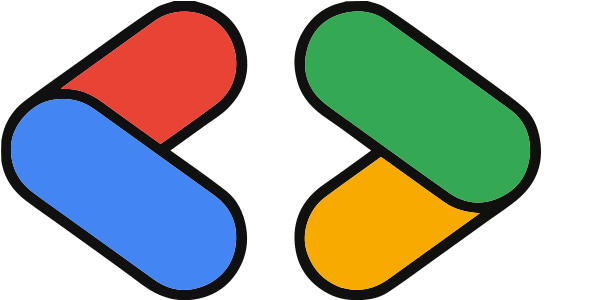
Experts2025Agenda
- 1What is MediaPipe & Google AI Edge
- 2What's inside: 22 ready-to-use tasks
- 3From demo to code: tools & APIs
- 4Hands-on: Build with Google AI Studio
What is
MediaPipe?
On-device ML from
Google AI Edge
What is Google AI Edge?
Google's end-to-end stack for building and deploying on-device ML & AI across platforms
MediaPipe
Prebuilt APIs for common AI tasks — vision, text, audio, retrieval, decisionLiteRT-LM
SDKs to run LLMs on-device across platformsLiteRT
Hardware-accelerated runtime for custom models from PyTorch, JAX, TensorFlow, Keras- Dynamic backgrounds in Google Meet
- Creator effects on YouTube Shorts
What is MediaPipe?
Ready-made AI building blocks: send in a camera frame, get back points, boxes or labels.
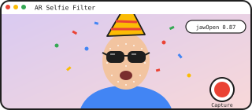
Swap the task, keep the flow: 22 tasks across Vision, Text, Audio, Decision & Retrieval all work the same way.
Where can you use MediaPipe?
Same tasks, same options and result types on every platform
Web
JavaScript · TypeScript
WASM · WebGPU
npm install @mediapipe/tasks-vision
Android
Kotlin · Java
Maven Central
com.google.mediapipe:tasks-vision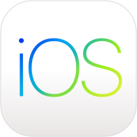
iOS
Swift · Objective-C
Swift Package Manager
MediaPipeTasksVision
Python
Python 3
Linux · macOS · Windows
pip install mediapipe
Flutter
Dart
pub.dev
flutter pub add mediapipe_visionWhy run ML on the device
Low latency
Real-time processing with no network round-tripPrivacy
Users' images and audio never leave the deviceOffline
Works without an internet connectionCost
No per-request inference server cost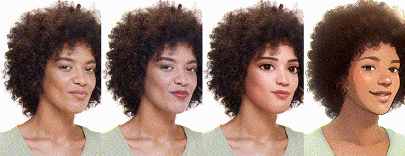
Real example: YouTube Shorts creator effects run on the phone in real time — no video is uploaded to process each frame.
What's
inside?
22 ready-to-use tasks
across 5 categories
Ready-to-use tasks
1Text 5 tasks
2Audio 3 tasks
3Decision 1 task
4Retrieval 2 tasks
5Vision 11 tasks
6GenAI LLMs
Model sizes by task type
Download size of the official models (log scale) — measured from the model files
Text
Text
Classic text models are tiny (0.3–26 MB). Gemma-based proofreading and summarizing are ~118 MB.
Text Classifier
Classify text into categories, such as positive or negative sentiment, fully on-device.
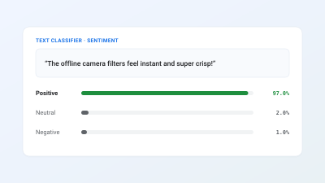
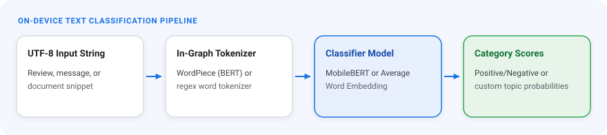
Try it: Text Classifier
Positive or negative? (English sentiment)
- Runs when this slide opens
Text Embedder
Turn text into semantic vectors and compare meaning with built-in cosine similarity.
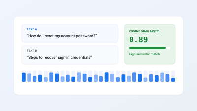
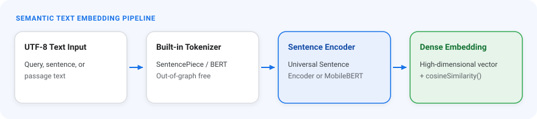
Try it: Text Embedder
How close are two sentences in meaning?
- Runs when this slide opens
Language Detector
Identify the language of any text, with a confidence score for each guess.
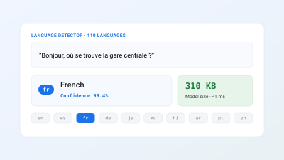
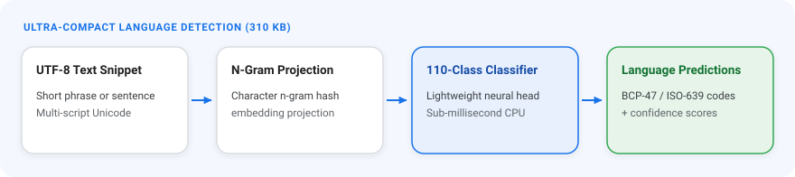
Try it: Language Detector
Detects the language as you type
- Runs when this slide opens
Text Proofreader
Detect and fix grammar and spelling errors locally, with a breakdown of each edit.
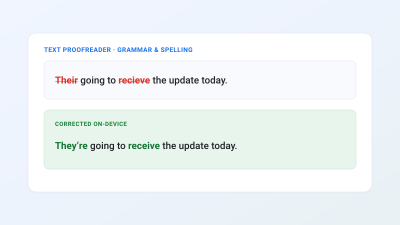
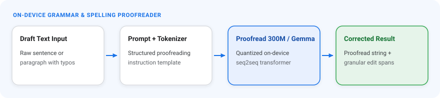
Text Summarizer
Summarize articles and notes into a short TL;DR or a list of key points.
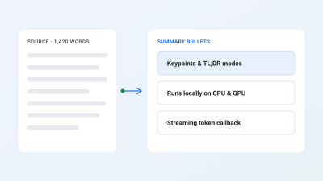
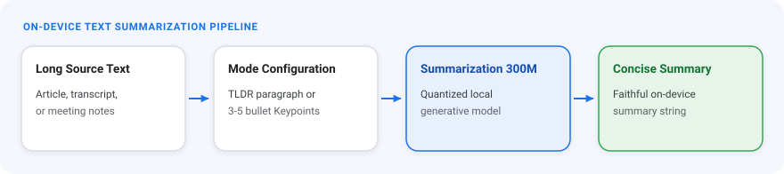
Audio
Audio
Sound classification is a 4 MB model; speech-to-text and TTS need 87–760 MB.
Audio Classifier
Classify everyday sound events from audio clips or a live microphone stream.
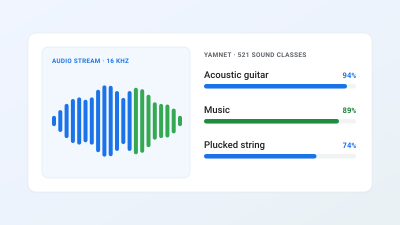
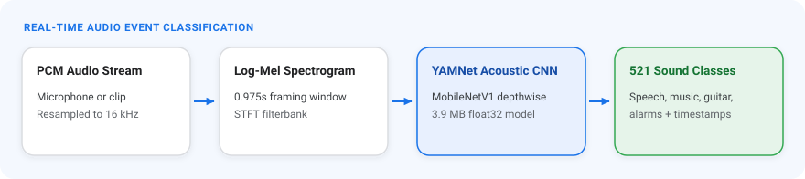
Try it: Audio Classifier
521 sound classes, live from the mic
- Top 5 sounds appear here
Audio Transcriber
Transcribe speech into punctuated, capitalized text — streaming while the user speaks.
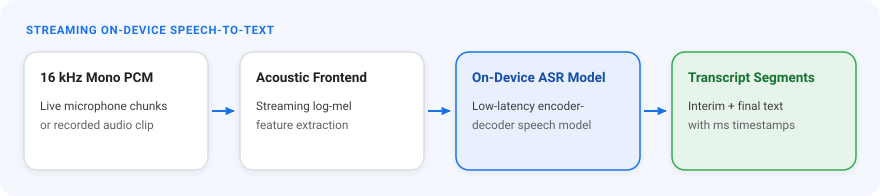
Text-to-Speech
Synthesize natural speech from text, streamed clause by clause for low latency.
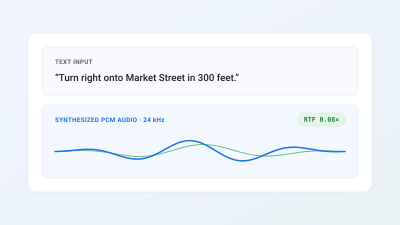
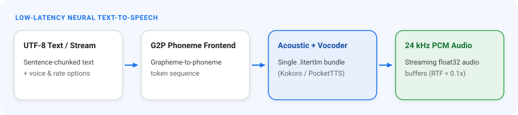
Decision
Decision
One task, many backends: pick 165 MB for speed or a multi-GB Gemma 4 for harder decisions.
Decision Maker
Score choices, yes/no checks and rubrics in a single forward pass — no token decoding.
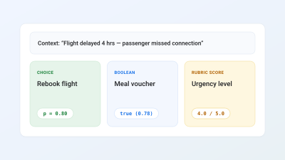
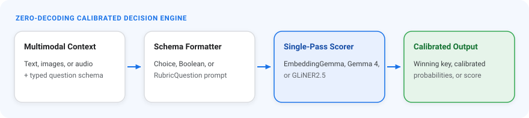
Retrieval
Retrieval
Both tasks share EmbeddingGemma 2: 165 MB for text only, up to 485 MB for text + image + audio.
Semantic Retriever
Index text, image and audio chunks and retrieve the right context for on-device RAG.
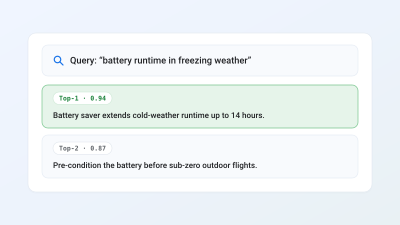
Universal Embedder
Embed text, images and audio into one shared multimodal vector space.
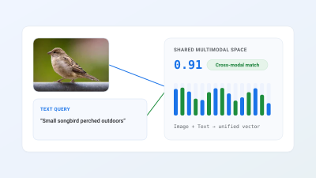
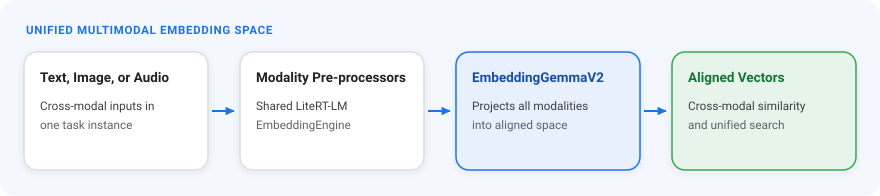
Vision
Vision
Every vision model is under 31 MB — small enough to load instantly in a web page.
 AI Edge
AI Edge
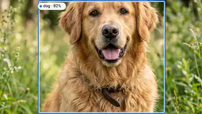
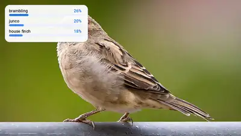
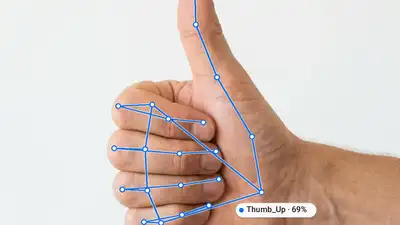
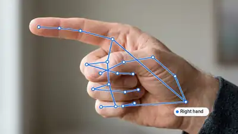
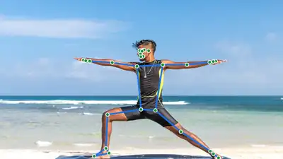
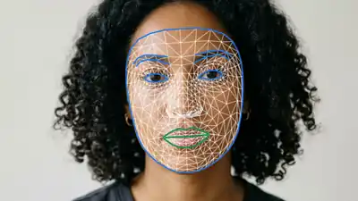
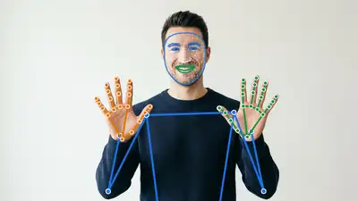
Object Detector
Detect and label multiple objects with bounding boxes and confidence scores in real time.
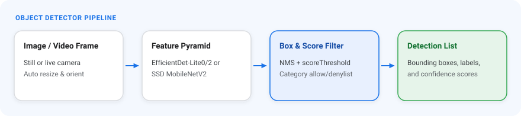
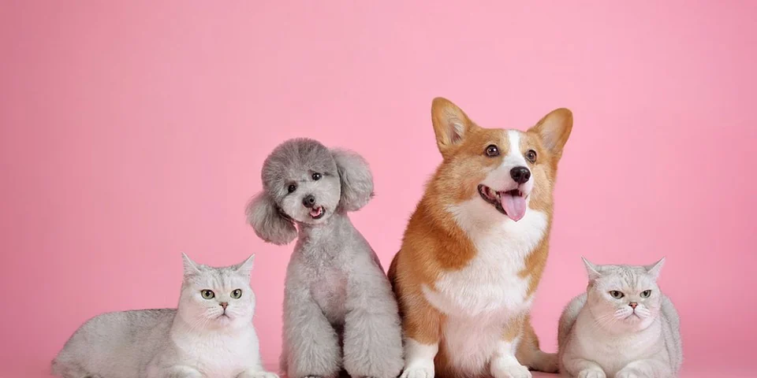
Object DetectorTry it: Object Detector
Boxes + labels for every pet in the photo
- Runs when this slide opens
Image Classifier
Classify a whole image or video frame into one of over a thousand categories.
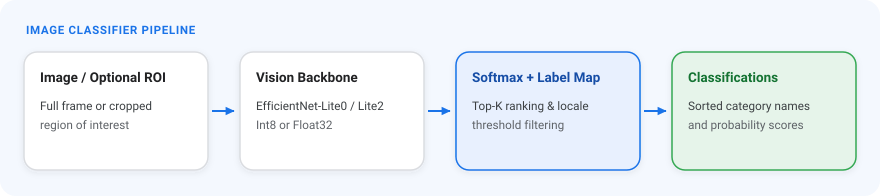
Try it: Image Classifier
Top-4 categories for the whole image
- Runs when this slide opens
Image Segmenter
Segment people, hair, clothes and background at pixel resolution.
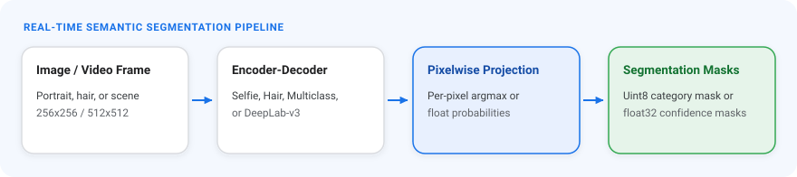
Try it: Image Segmenter
Person mask tinted in Google blue
- Runs when this slide opens
Interactive Segmenter
Cut out the object under a user's tap or scribble with a precise mask.
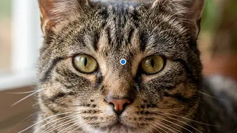
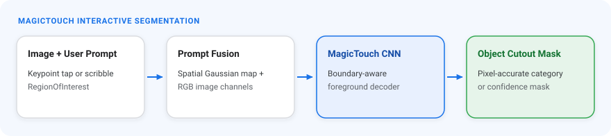
Gesture Recognizer
Recognize hand gestures together with 21 hand landmarks in real time.
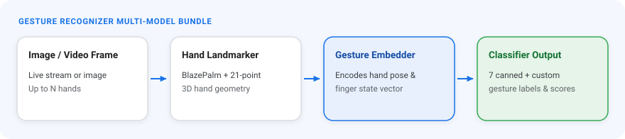
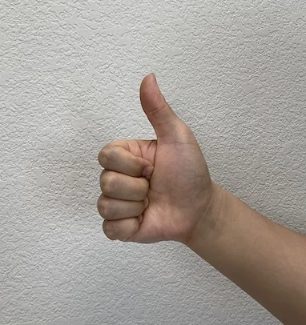
Gesture RecognizerTry it: Gesture Recognizer
Gesture name + 21 hand landmarks
- Runs when this slide opens
Hand Landmarker
Locate 21 3D hand keypoints and left/right handedness for every hand in frame.
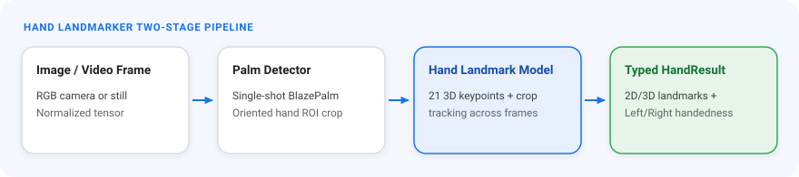
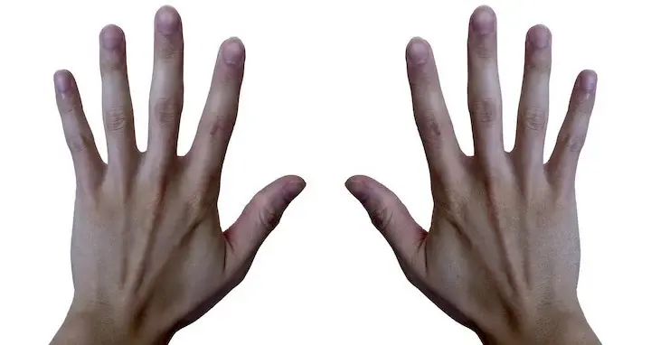
Hand LandmarkerTry it: Hand Landmarker
21 landmarks per hand + left / right
- Runs when this slide opens
Face Detector
Find faces with bounding boxes and 6 facial keypoints — fast enough for any camera feed.
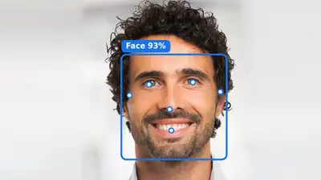
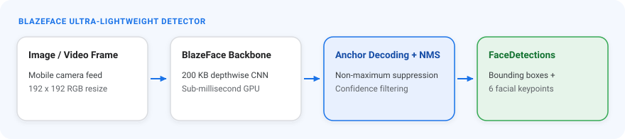
Try it: Face Detector
Face box + 6 keypoints
- Runs when this slide opens
Face Landmarker
Predict a dense 3D face mesh, expression blendshapes and head pose.
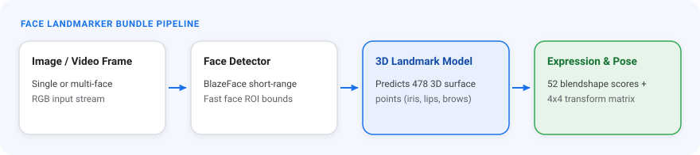
Try it: Face Landmarker
478-point 3D face mesh
- Runs when this slide opens
Pose Landmarker
Track full-body 3D pose landmarks, with an optional segmentation mask.
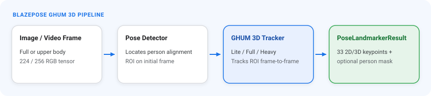
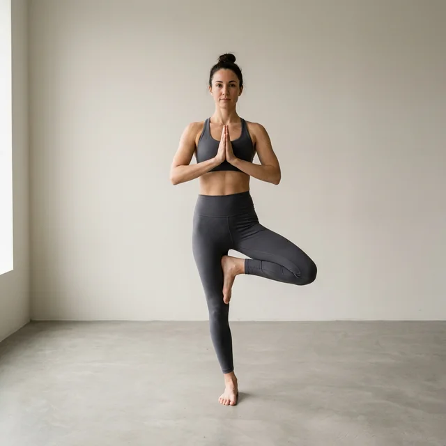
Pose LandmarkerTry it: Pose Landmarker
33 body landmarks + skeleton
- Runs when this slide opens
Holistic Landmarker
Track face, both hands and full-body pose together in a single pipeline.
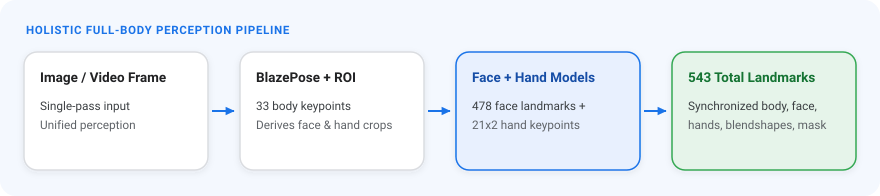
Image Embedder
Extract feature vectors from images for visual similarity search.
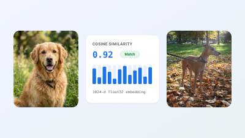
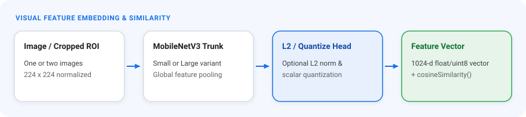
Try it: Image Embedder
How similar are two images?
- Runs when this slide opens
MediaPipe Studio
- Try every task right in the browser
- Test with your webcam or your own uploads
- Tune threshold, max results and delegate in real time
- Evaluate models before writing any code
From demo
to code
Studio, the Task API
and the code behind the demos
From input to result in 3 steps
.task / .tflitepre-trained or custom
createFromOptions()CPU / GPU delegate
categories, masks
Running mode IMAGEVIDEOLIVE_STREAM
Hand Landmarker on the web
import {
FilesetResolver, HandLandmarker
} from "@mediapipe/tasks-vision";
const vision = await FilesetResolver.forVisionTasks(
"https://cdn.jsdelivr.net/npm/@mediapipe/tasks-vision@0.10.14/wasm"
);
const handLandmarker = await HandLandmarker.createFromOptions(vision, {
baseOptions: {
modelAssetPath: "hand_landmarker.task",
delegate: "GPU",
},
runningMode: "VIDEO",
numHands: 2,
});
function loop() {
const result = handLandmarker.detectForVideo(video, performance.now());
// result.landmarks → 21 points per hand (x, y, z)
draw(result.landmarks);
requestAnimationFrame(loop);
}
- Load WASM runtime
- Create the task (GPU)
- Run per video frame
Object Detection with Python
import mediapipe as mp
from mediapipe.tasks import python
from mediapipe.tasks.python import vision
options = vision.ObjectDetectorOptions(
base_options=python.BaseOptions(
model_asset_path="efficientdet_lite0.tflite"),
score_threshold=0.5,
)
detector = vision.ObjectDetector.create_from_options(options)
image = mp.Image.create_from_file("cat_and_dog.jpg")
result = detector.detect(image)
for det in result.detections:
cat = det.categories[0]
print(cat.category_name, round(cat.score, 2), det.bounding_box)
- Same Tasks API as web & mobile
- Runs on desktop & Raspberry Pi
- Boxes + labels + scores
Hands-on:
build it
Create your own MediaPipe app
in Google AI Studio
Explore MediaPipe apps in the Gallery
- 1Open aistudio.google.com
→ Build › Gallery - 2Pick the MediaPipe category chip
- 3Open an app and try it live with your camera
- 4Remix it into My apps and keep prompting to make it yours
Build with the newest model: Gemini 4 Hydrogen
- Fast & cost-efficient — built for everyday coding and agentic workflows
- 2.5× faster than Gemini 3.8 Flash at its default setting
- 1M-token context window
- 4 thinking levels: low · medium · high (default) · xhigh
Prompt recipe for a MediaPipe app
- 1 · GoalWhat the app is for, in one line
- 2 · MediaPipe taskName it exactly: Pose / Hand / Face Landmarker…
- 3 · InputWebcam, uploaded photo or video
- 4 · Output & UIWhat to draw, count, show or play
- 5 · RulesOn-device only, errors, mobile-friendly
Build a web app called "Squat Coach". Use MediaPipe Pose Landmarker (@mediapipe/tasks-vision) on my webcam, running fully in the browser. Draw the 33 body landmarks and skeleton over the video. Count squats: one rep = knee angle drops below 90° and comes back above 160°. Show the rep count and live knee angle in big text. After each rep, show "Good rep!" with a short animation. Add Start / Stop camera buttons and a friendly message if camera permission is denied. Keep all video on-device — never upload frames.
More prompt ideas to remix
Build a web app that uses MediaPipe Hand Landmarker on my webcam. Draw 8 piano keys across the bottom of the screen; when a fingertip dips into a key, play that note and highlight the key. Show the hand skeleton over the video. Run fully in the browser.
Create a selfie filter app with MediaPipe Face Landmarker: place sunglasses and a party hat that follow my head in real time. Use the blendshapes so opening my mouth fires confetti. Add a button to capture and download a photo. Keep everything on-device.
Make a photo slideshow controlled by MediaPipe Gesture Recognizer on the webcam: Thumb_Up = next, Thumb_Down = previous, Open_Palm = pause, Victory = take a screenshot. Show the detected gesture and confidence in the corner.
Build a web app with MediaPipe Gesture Recognizer on my webcam. When I make a Closed_Fist and then open my hand to Open_Palm, burst a glowing four-point Gemini sparkle logo out of my palm: it grows, spins and fades with particle trails in blue, purple and pink. Use the hand landmarks to anchor the effect to the center of my palm so it follows my hand. Show the current gesture with its confidence and count how many sparkles I have launched. Run fully in the browser.
Tip Name the exact task, the input and what to draw — then keep iterating in chat.
Even more prompt ideas
Make a balloon-blowing game with MediaPipe Face Landmarker on my webcam. Attach a balloon to my lips using the mouth landmarks. While I puff my cheeks (cheekPuff blendshape) or pucker my lips (mouthPucker), inflate the balloon; when I stop, it slowly deflates. If it grows past the dashed limit, pop it with a bang and confetti and add 1 to my score. Show a live meter of the blendshape value, the score, and a 30-second timer with a final score screen.
Build a hair color try-on app with MediaPipe Image Segmenter using the selfie_multiclass_256x256 model on my webcam. Use the hair category mask to tint only my hair with the selected color, with soft edges and blending so the texture still looks natural. Add color swatches (pink, blue, purple, blonde, green), a rainbow gradient mode and an intensity slider. Add a draggable before/after split line and a button to save a photo. Keep everything on-device.
Create a Pose Match game with MediaPipe Pose Landmarker on my webcam. Show a dashed target pose outline (star, T-pose, tree, superhero, squat) and draw my live skeleton on top. Compute a match score from the joint angles of arms and legs; when I stay above 80% for 2 seconds, award points, play a sound and move to the next pose. Add a 60-second timer, a match-percentage bar and a final score screen.
Make an object scavenger hunt with MediaPipe Object Detector (EfficientDet-Lite0) on my webcam. Pick random everyday COCO items such as cup, cell phone, book, bottle and scissors and show one as the current mission with an emoji. When I hold that object up to the camera with score above 0.6, draw its box, play a ding and give points, with a bonus for finding it fast. Show the next items in a side list, run a 90-second round and keep a top-5 leaderboard in localStorage.
Tip Long prompt? Scroll inside the box — Copy prompt grabs the whole thing.
Build a MediaPipe app in 15 minutes 🏆
⏱ 15:00How to play
- Open aistudio.google.com › Build
- Use at least 1 MediaPipe task — camera, hands, face, pose…
- Prompt, test, iterate until the timer ends
- Hit Share and send us your app link
Judging
Top picks demo live on stage
Prizes 🎁
Prizes for the
top 3 apps
Solo or pairs · any idea goes · no install needed, just a browser + camera
Get started today
Thank you
Q & A
Punsiri Boonyakiat
Google Developer Expert in Cloud AI
Appendix
Model Maker — train on your own data
1 · Prepare data
A few hundred images or texts per class is enough to start2 · Transfer learning
Retrain only the last layers — quick on Colab3 · Export
Get a.tflite that plugs straight into the Tasks API
from mediapipe_model_maker import image_classifier
data = image_classifier.Dataset.from_folder("dataset/")
train, rest = data.split(0.8)
model = image_classifier.ImageClassifier.create(
train_data=train, validation_data=rest,
options=image_classifier.ImageClassifierOptions(
supported_model=image_classifier.SupportedModels.MOBILENET_V2))
model.export_model()
LLM Inference API — Gemma on device
- Run Gemma and other open models on Android, iOS, Web
- Streaming responses
- LoRA support for task-specific tuning
- WebGPU acceleration on the web
import { FilesetResolver, LlmInference }
from "@mediapipe/tasks-genai";
const genai = await FilesetResolver.forGenAiTasks(WASM_URL);
const llm = await LlmInference.createFromOptions(genai, {
baseOptions: { modelAssetPath: "gemma.task" },
maxTokens: 512,
});
const answer = await llm.generateResponse(
"Explain MediaPipe in one sentence"
);